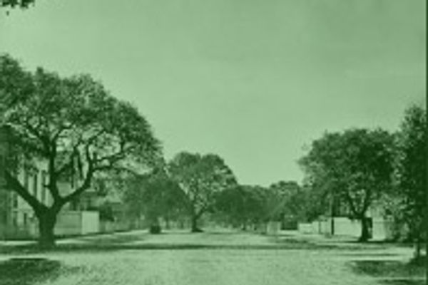
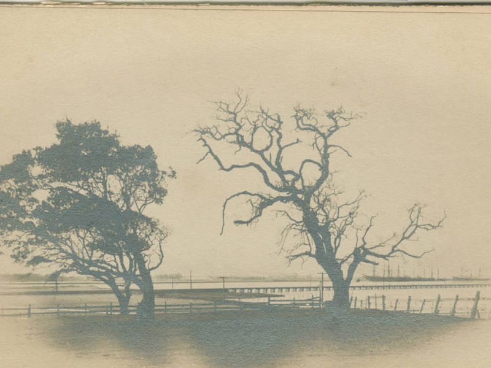
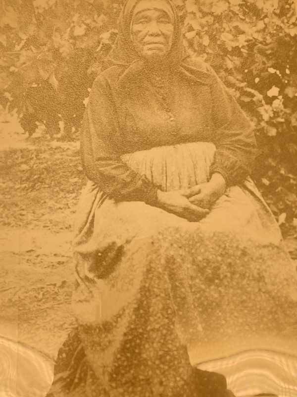

FERTILE DREAMS
is a temporary name for an unfolding project
We are currently building a body of work that engages with food, practical action and time travel, using Dream Farm as laboratory and workshop. We know that the project will include making ritual, sculpture, discourse, and sharing food with these questions:
Our street and every vista from our windows is full of skyscrapers, built to support the crumbling tech world and rapacious appetite of capital. What are more fertile dreams for this place? From the ground up where can we imagine into?
As we pivot between the drought, flood and other inundations of a changing climate how do we draw from past, present, and future to imagine and build life supporting structures that meet changing conditions?
How do we honor elders, trees and deep roots? In Oakland, aka land of Oaks, oak trees were once a central food source for the Huichun Ohlone on whose land we reside; Oak trees remained when settlers took this land and turned Oakland into farms on the edges of bay marshes. How do we reject colonialism, honor elders, re-build and re-learn?
Now we are far from the production of food; just buying healthy food close by is often a challenge. How do we connect to land we can not touch?
How do we make an invocation and a meal? Why does a table running down the middle of the street seem so enticing?
Under duress can we draw on a history of transformation towards the common good?
The Background of this Project
Oakland went from Indigenous wild land to farm land to beautified constructed city to motor city to sky scraper illogic in but 150 years, a mili-second in human time. We are both looking backward to illuminate the past and looking forward to imagine a future.
This particular project is in the DNA of Dream Farm Commons. Three artists, Ann Schnake, Stacey Goodman and Robert Gomez Hernandez, imagined and built this space almost exactly 5 years ago: DREAMs as big world spirit forces & garden variety ideas of transformation; FARM as grounded productivity and actual greening; the COMMONS, a collaborative flow, community, the block, the neighborhood, the world.
 